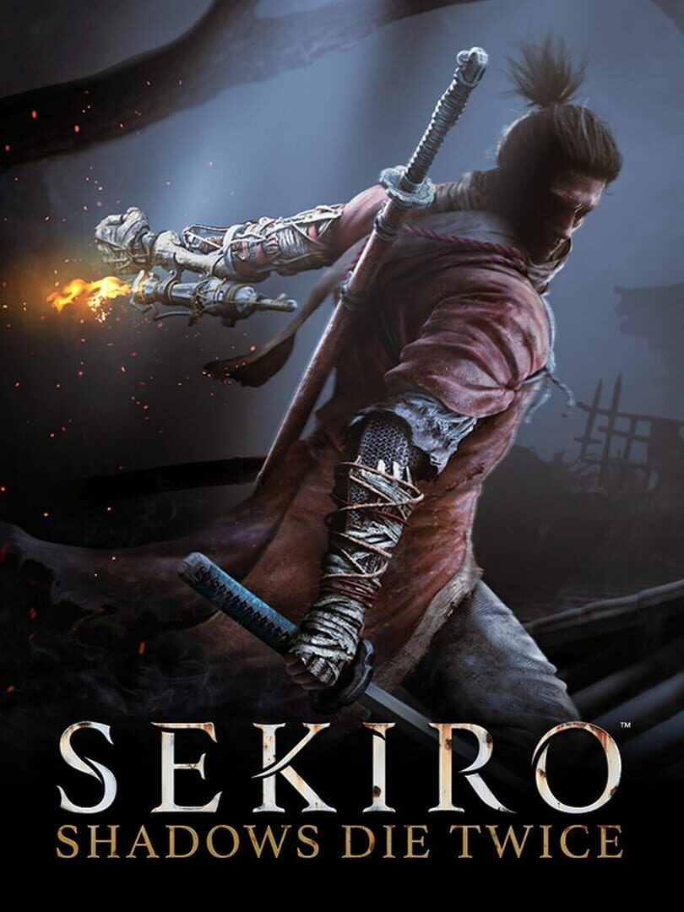

Sekiro: Shadows Die Twice
Sekiro: Shadows Die Twice
Details
|  | |
| Playtime | Not Played |
| Last Activity | Never |
| Added | 25/12/2022 22:56:52 |
| Modified | 18/05/2025 0:53:27 |
| Completion Status | Not Played |
| Library | Steam |
| Source | Steam |
| Platform | PC (Windows) |
| Release Date | 22/03/2019 |
| Community Score | 91 |
| Critic Score | 90 |
| User Score | |
| Genre | Adventure Hack and slash/Beat 'em up |
| Developer | FromSoftware |
| Publisher | Activision |
| Feature | Single Player |
| Links | Official Website Wikipedia Youtube Steam Twitch Twitch |
| Tag | Action Adventure Assassin Atmospheric Dark Dark Fantasy Difficult Gore Great Soundtrack Hack and Slash Ninja Open World Rhythm RPG Singleplayer Souls-like Stealth Story Rich Third Person Violent |
Description
This Game of the Year Edition now includes bonus content*:
- Reflection and Gauntlet of Strength - new boss challenge modes
- Remnants - leave messages and recordings of your actions that other players can view and rate
- 3 unlockable cosmetic skins
Game of the Year - The Game Awards 2019
Best Action Game of 2019 - IGN
Over 50 awards and nominations
Carve your own clever path to vengeance in the critically acclaimed adventure from developer FromSoftware, creators of the Dark Souls series.
In Sekiro™: Shadows Die Twice you are the 'one-armed wolf', a disgraced and disfigured warrior rescued from the brink of death. Bound to protect a young lord who is the descendant of an ancient bloodline, you become the target of many vicious enemies, including the dangerous Ashina clan. When the young lord is captured, nothing will stop you on a perilous quest to regain your honor, not even death itself.
Explore late 1500s Sengoku Japan, a brutal period of constant life and death conflict, as you come face to face with larger than life foes in a dark and twisted world. Unleash an arsenal of deadly prosthetic tools and powerful ninja abilities while you blend stealth, vertical traversal, and visceral head to head combat in a bloody confrontation.
Take Revenge. Restore Your Honor. Kill Ingeniously.
*Download required.
Internet connection required for asynchronous Multiplayer.
- Reflection and Gauntlet of Strength - new boss challenge modes
- Remnants - leave messages and recordings of your actions that other players can view and rate
- 3 unlockable cosmetic skins
Game of the Year - The Game Awards 2019
Best Action Game of 2019 - IGN
Over 50 awards and nominations
Carve your own clever path to vengeance in the critically acclaimed adventure from developer FromSoftware, creators of the Dark Souls series.
In Sekiro™: Shadows Die Twice you are the 'one-armed wolf', a disgraced and disfigured warrior rescued from the brink of death. Bound to protect a young lord who is the descendant of an ancient bloodline, you become the target of many vicious enemies, including the dangerous Ashina clan. When the young lord is captured, nothing will stop you on a perilous quest to regain your honor, not even death itself.
Explore late 1500s Sengoku Japan, a brutal period of constant life and death conflict, as you come face to face with larger than life foes in a dark and twisted world. Unleash an arsenal of deadly prosthetic tools and powerful ninja abilities while you blend stealth, vertical traversal, and visceral head to head combat in a bloody confrontation.
Take Revenge. Restore Your Honor. Kill Ingeniously.
*Download required.
Internet connection required for asynchronous Multiplayer.